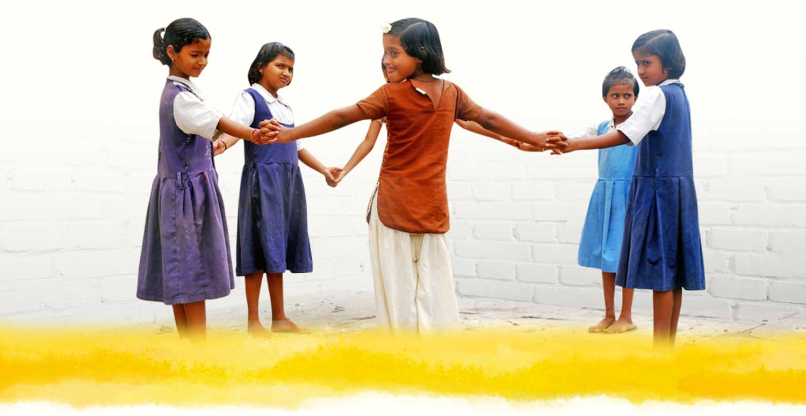

This program is for those volunteers/interns who are interested in training vulnerable children.
The program aims to provide an opportunity for needy children and orphans to live and learn under one
roof until they are adopted or integrated in the community or placed with family members who can take better care of them.
Due to extreme poverty, neglect and abuse, many children are forced to leave their homes to
live on the streets or forced into child labor and trafficking. The society also looks down upon them,
and mostly lives under bad conditions.
Why this program and the need for volunteers/interns/sponsors?
The orphanage needs extra pairs of hands to help with the day-to-day running of the project with works like cleaning, cooking and serving food to the children.
Volunteers/interns are also required to provide some Basic English education to the children, and organize physical and sports lessons and assist the staff in counseling the children.
We urgently need your support in maintaining our aim and providing further opportunities for our supported children home.
Help us support orphans by donating to our program.
Program 2: Handicapped
We believe that disability is a cross-cutting issue which emphasises the development and having an integrated approach to becoming responsive to people with disabilities and
their needs. Hence we work with numerous partners and programs to ensure an increase in access to education, dignified livelihood,
healthcare and therapeutic interventions as well as inclusive living, community-based rehabilitation, and public advocacy and awareness for people with disabilities.
Our interventions cover all types of physical and intellectual disabilities, and mental health issues and empower people with disability to create a meaningful life for themselves.
This program aims to provide support, resources, and services to people with disabilities to help them become
more independent and fully participate in their communities.
Help us support handicapped individuals by donating to our program.
Program 3: Elderly
There are thousands of destitute & disadvantaged elders who do not even have access to two square meals and the means to meet their basic needs.
We aim to improve the quality of life of needy elders, by providing basic sustenance, so they can lead active and healthy lives, through monthly ration.
A small contribution can help poor elders living in old age homes, survive with dignity.
Help us support elderly individuals by donating to our program.
Program 4: Girl Child Education
Our girls have immense potential to make our country proud – and yet, there are millions of little girls in
India who do not get proper education, nutrition or healthcare, and who are vulnerable to exploitation. 1 in every 3 child brides in
the world is from India and almost 13 million girls work to support their families*.
Not only are they forced to drop out of school, but they are also deprived of opportunities to achieve their true potential.
According to a McKinsey Gender Parity study, if all girls complete their education and participate in the workforce, India could add a whopping $770 billion to the country’s GDP by 2025! What more reason do we need to believe that donating to sponsor girls education today is the way to a brighter future?
Let’s come together to educate girls today. With YOUR help, Chaanv Welfare can ensure that girls remain in school, grow up healthy and are equipped to take charge of their lives. Donate now!

Help us support girl child education by donating to our program.